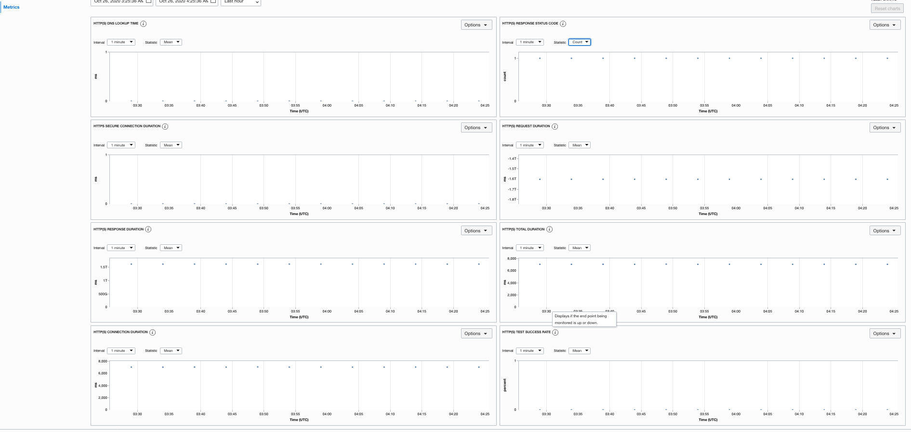

OCI Health Checks
Introduction
Monitors the health of IP addresses and hostnames, as measured from geographic vantage points of your choosing, using HTTP and ping probes. After configuring a health check, you can view the monitor’s results. The results include the location from which the host was monitored, the availability of the endpoint, and the date and time the test was performed.
Pre-Requisites
Deploy MuShop
Create Oracle Cloud Infrastructure Health Checks
Navigate to Monitoring -> HealthChecks -> Create HealthChecks

Verifying Oracle Cloud Infrastructure Health Check Results
Navigate to Monitoring -> HealthChecks -> <Your_HealthChecks_Name> -> HealthChecks History

Observe HTTP metric
Navigate to Monitoring -> HealthChecks -> <Your_HealthChecks_Name> -> Metrics
Observe some of the Http metrics. For metric details refer

Additionally, you can view these metrics under Monitoring -> Service Metrics -> Metric namespace = oci_healthchecks